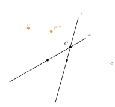
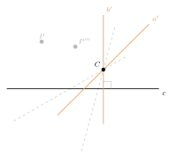
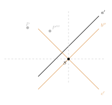
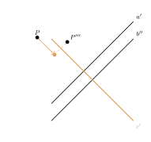

Aufgabe 4.4
Begründen Sie, dass eine Dreifachspiegelung mit drei Schnittpunkten ebenfalls zu einer Schubspiegelung führt.
Womit anfangen? Nehmen Sie die Freiheit aus der vorigen Aufgabe und fragen Sie, wozu sie hier gut ist.
- Wie darf man ein Achsenpaar verändern, ohne die Abbildung zu ändern?
- Welche Lage der drei Achsen wäre die bequemste?
- Woran erkennt man eine Schubspiegelung an ihren Achsen?
Gegeben: drei Achsen $a$, $b$, $c$ mit drei verschiedenen Schnittpunkten. Zu zeigen ist, dass $\sigma_c \circ \sigma_b \circ \sigma_a$ eine Schubspiegelung ist.
Schritt 1: die Ausgangslage

Die drei Achsen schneiden sich paarweise in drei verschiedenen Punkten. Der Punkt $P$ wandert durch alle drei Spiegelungen nach $P'''$ — dieses Bild bleibt in allen folgenden Schritten unverändert, denn die Abbildung ändert sich ja nicht.
Der erste Griff: $\sigma_b \circ \sigma_a$ ist eine Drehung um $C$, und zwar um den doppelten Winkel zwischen $a$ und $b$.
Schritt 2: das Paar $(a,b)$ drehen, bis $b \perp c$ steht

Was erlaubt ist: Die Drehung um $C$ hängt nur vom Winkel zwischen den beiden Achsen ab, nicht davon, wie das Paar im Raum liegt. Man darf es also um $C$ drehen — hier so weit, bis die zweite Achse senkrecht auf $c$ steht.
Aus $a$, $b$ werden $a'$, $b'$. Die Abbildung ist dieselbe geblieben; $P'''$ liegt unverändert.
Schritt 3: das Paar $(b',c)$ drehen, bis $b'' \parallel a'$ wird

Derselbe Griff, andere Klammerung: Jetzt fasst man die hinteren beiden Spiegelungen zusammen. Weil $b'$ und $c$ senkrecht aufeinander stehen, ist $\sigma_c \circ \sigma_{b'}$ eine Halbdrehung um ihren Schnittpunkt $S$ — und eine Halbdrehung bleibt eine Halbdrehung, wie auch immer das rechtwinklige Paar um $S$ gedreht wird.
Man dreht es so, dass die erste der beiden Achsen parallel zu $a'$ wird. Aus $b'$, $c$ werden $b''$, $c'$.
Schritt 4: ablesen, was dasteht

Jetzt sind $a'$ und $b''$ parallel — ihre Doppelspiegelung ist also eine Verschiebung, senkrecht zu beiden und um das Doppelte ihres Abstands. Danach kommt die Spiegelung an $c'$, und $c'$ liegt parallel zur Verschiebungsrichtung, weil sie senkrecht auf $b''$ steht.
Verschiebung längs einer Geraden, dann Spiegelung an dieser Geraden — das ist die Definition der Schubspiegelung, und $P'''$ liegt genau dort, wo es von Anfang an lag.
Im Video: Etappe 6 · Drei Spiegelungen, 2 & 3 Schnittpunkte bei 9:12